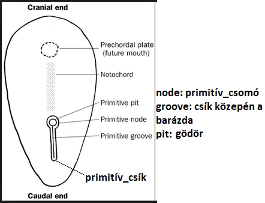
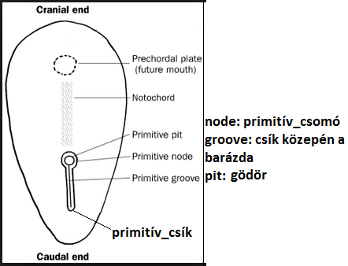

3. Ontogenezist szabályozó mechanizmusok. Transzkripciós faktorok és a Hox gének jelentősége. Jelátviteli folyamatok a fejlődésben.

Bevezetés
☯ Az, hogy a gének irányítják, vezérlik a fejlődést, elég félrevezető meghatározás. Inkább úgy érdemes felfogni, hogy a gének biztosítják a fejlődés "anyagi szükségleteit". Az ontogenezis(egyedfejlődés) során kialakuló különböző féle sejttípusoknak(pl.fibrocita,hepatocita) eltérő a fehérjekészlete, de génállományuk azonos. Vagyis az egyes sejttípusok kialakulása (differenciáció) során nem változik a kromoszómák összetétele.
Ám a sejtek a rendelkezésre álló génkészletnek csak bizonyos részét használják fel (génexpresszió) (fejlődésük során és kifejlett állapotban is).
Tehét a különböző sejttípusok eltérései: fehérjekészlet, és ennek következtébeni génexpressziós mintázatuk is eltér.
☯ Génexpresszió szabályozásának szintjei: Transzkripciós, poszt-transzkripciós, transzlációs, poszt-transzlációs. Transzkripciós szabályozást lényegében 2féle csoportra lehet osztani: "durva" és "finom". "Durva" szabályozás: hiszton acetiláció és deacetiláció, metiláció, foszforiláció. Acetilációnál acetilcsoport -COCH3 adódik Klizin vagy Rarginin aminósavhoz és ezáltal fellazítja a kromatint, és így serkenti a transzkripciót. Deacetiláció pont az ellentetjét váltja ki, tehát a kromatin kondenzálódik (visszafűződik), gátolja a transzkripciót. Metilációnál -CH3 adódik a hisztonhoz, és ezáltal inaktívvá teszi a DNS ezen részét.
Transzkripciós faktorok
☯ Finom szabályozás: Finom szabályozásban résztvevőknek 2 csoportja van: cisz és transz. Transz-elemek pl. génreguláló_fehérjék és TF-ek. Cisz-elemek = DNS-szekvenciák, tehát ilyenek pl. génkontroll régiók: UPE, promoter, enhancer vs. silencer, szabályozó-elemek. A transzkripciós faktorok olyan fehérjék, amelyek a gének szabályozó régióihoz képesek kötődni és ezzel aktiválják, vagy gátolják az adott gén átírását. Két típusa: általános, és specifikus. Spec_TF-ek kötődnek a gén enhancer vs. silencer és szabályozó-elemek régióihoz. Ezáltal fogják befolyásolni az RNS-polimeráz II és a promoter_régióhoz kötődő ált_TF aktivitását. Enhancer régió távol van a promoter régiótol (akár 50000bázis távolságra, és mind1 hogy 5' vagy 3' irányba). Alapvetően spec_TF-et megkötve serkenti a transzkripciót. Azonban egyes géneknél gátolja a transzkripciót, ilyenkor a neve silencer-régió. UPE és a hozzákötődő TAF-ok alapfeltételei a transzkripciónak (promotert erősítik).
☯ A transzkripciós faktorok génjeinek szabályozó régióiban előfordulhatnak az általuk kódolt fehérje által felismert szekvenciák is, ezáltal saját transzkripciójukat folyamatosan képesek fenntartani (pozitív visszacsatolás).
☯ TF-ek szerkezete: DNS-kötő domén: ezzel kötődik a génszabályozó régióhoz. Transz-aktivátor domén: ezzel befolyásolja a transzkripciót. Fehérje-fehérje interakciós domén: ha ezen része is van, akkor ezen keresztül más fehérje képes befolyásolni aktivitását.
☯ Legismertebb DNS-kötő domén típusok: Hélix-kanyar-hélix HTH | Cinkujj Zn-finger | Leucin-cippzár Leu-zipper | Hélix-hurok-hélix HLH. HTH-szerű pl. a homeodomén. Zn-finger pl. a GATA TF-ek. GATA TF-ek szerepet játszanak a szívfejlődés és embrionális vérképzésben.
Hox-gének
☯ Hox-gének(=) olyan gének, melyek szelvény-szegmentáltak. Ezekben található egy DNS-szakasz, melynek neve homeobox. Ez kódolja a homeodomént. Homeodomén: hox-gének által kódolt TF-ek azon része, mely HTH-szerű.
☯ Ezek a gének irányítják az embrió eredetileg egyforma szegmentumaiban eltérő szervek kialakulását pl. a bélcső szakaszai, az ősvese származékai, a kopoltyúívek, az agytörzs, stb. Tehát ezek mutációja esetén a test egy régiója átalakul egy másik régióvá. pl. Hoxc8 génkiütés eredményeképpen az első lumbális csigolya átalakul bordát hordozó csigolyává.
☯ TF-ek komplexeket alkotnak. A fejlődés során a komplexek bizonyos elemei kicserélődnek.
Poszt-transzkripciós szabályozás
Lényege: sapkaképzés,splicing,poliA-farokképzés. Sapkaképzésnél pre_mRNS 5'-végén képződik egy "sapka". Splicing-nál az intronok kivágása megy végbe, és a fehérjét kódoló exonok maradnak meg. PoliA-farokképzésnél egy ~200adenin tartalmú "farok" adódik a pre_mRNS 3'-végéhez.
Jelátviteli Molekulák
☯ Fejlődést irányító molekulák két nagy csoportja: TF-ek és a jelátviteli molekulák. Jelátviteli Molekulák funkciója, hogy a TF-ek átalakuljanak az adott fejlődési stádiumban (lásd 3. TF-komplex). Jelátviteli molekulák ➜ ligandum=szignál(pl.GF-ek,BMP,SHH) + receptor. Receptor ha megköti a ligandumot, akkor elindul az ún. szignáltranszdukciós_útvonal = jelátviteli_útvonal, mely által szabályozzák majd a TF-eket.
☯ Embrionális jelátviteli folyamatok: Lényegük, hogy egy sejtcsoport (inducer) expresszál valamilyen ligandumot, és ez fog hatni egy másik sejtcsoportra (responder). Az inducer alakváltozást, mitotikus ráta változást vagy sejtsors változást képes indukálni a responderben. Szignálmolekulák pl. BMP-4, SHH(SonicHedgeHog). Pl. chorda_dorsalis(inducer) expresszál SHH-t(szignál), mely következtében indukálja az ectoderma(responder) neuroectodermává válását.
☯ A kompetencia egy adott sejtcsoport válaszadási képessége egy bizonyos szignálra. pl. szemhólyag fejlődésnél szemhólyag✽ indukálja az ektoderma szemlencsévé alakulását. (2) ha a szemhólyagot ektoderma más része alá teszem, ott a szignál nem váltja ki átalakulását szemlencsévé, ugyanis az inkompetens. (3) & (4). Tanúlság: csak a Pax6 (TF) expresszáló ektoderma képes szemlencsévé alakulni szignál hatására, a (2)es ezért nem ment végbe. Megfigyelhető később a reciprok indukció, vagyis a képződött szemlencse visszahat a szemhólyagra és kialakul belőle a retina.
☯ Jelátviteli_útvonalak csoportosítása a szignálmolekula alapján: juxtakrin, parakrin, endokrin. Juxtakrin: a ligandum is a sejtmembránban van kihorgonyozva, tehát a ligandumot kibocsátó és a receptort tartalmazó sejtek közvetlenül kell érintkezzenek egymással. Parakrin: jelkibocsátó sejt az extracelluláris térbe szekretálja a ligandumot. Endokrin: az endokrin sejtek által termelt ligandum – hormon – a véráramon keresztül jut el a test távolabbi pontjaira.
☯ A fejlődésben szerepet játszó fontosabb szignáltranszdukciós_útvonalak: Citokinin RPTK TGFβ HH Wnt Notch. Ezeknél az elsődleges eredmény a célgének transzkripciójának megváltozása a jel által szabályozott TF által.
TGFβ jelátviteli_útvonal
☯ Negatív befolyással vannak a növekedésre.
☯ A ligandumokról kapta az elnevezést, ugyanis azok a TGFβ-(szuper)család. Ebbe családba tartoznak pl. BMP-k, Nodal
☯ Nodal Nodal részt vesz a jobb-bal asszimetria kialakulásában (lásd még HH-jeltáviteli_útvonal).
☯ BMP BMP részt vesz pl. neurolációnál (és csontfejlődésben is, a nevét onnan kapta: Bone Morphogenetic Protein). Neuroláció során kiinduláskor, az ectodrma a "benne lévő" BMP-4 koncentráció alapján 3 részre osztható: magas a későbbi epidermisben, közepes a későbbi dúclécben, alacsony a későbbi velőcsőben. Ez gátolja at ecotderma átalakulását neuroektodermává. Azonban a chorda_dorsalis olyan szignálokat küldd (WNT3 és az FGF) melyeg gátolni fogják a BMP-4-et és megkezdődik a neuroláció.
☯ Lényege: receptor megköti a ligandumot, hatására a receptor intracelluláris része foszforilálódik. Majd ezután a Smad-nevű fehérje✽ (az is foszforilálódott) bejut a sejtmagba és ott a génreguláló régióra hat.
RPTK (receptor-protein-tirozin-kináz) jelátviteli_útvonal
☯ Nevét a receptorrol kapták: receptor-tirozin-kináz(RTK).✽ ✽
☯ Ligandumok a GF-ek.✽
☯ pl. FGF ➜ Pozitív befolyással vannak a növekedésre. (ECM-ben heparán-szulfát nevű proteoglikánhoz kötődnek, és így kapcsolódnak majd a receptorhoz.)
☯ Megjegyzendő, hogy az útvonal végén az inaktív TF azért lesz aktív, mert foszforilálva lesz egy magban lévő kináz által (kináz = fehérjét foszforiláló enzim).
HH = HedgeHog jelátviteli_útvonal
☯ Ligandumok: SonicHH (,DesertHH, IndianHH).
☯ Receptorok: patched.
☯ Lefutásának lényege: ha a receptor megfogta a ligandumot, akkor annak ✽hatására a mikrotubulusról leválik a TF, ami majd bejut a magba.
☯ Jelentősége pl. bal-jobb aszimmetria kialakítása, ennek lényege: primitív csomó környékén vannak csillók, melyek átáramoltatják bal_oldalra az SHH-t✽, aminek következtében a nodal(szignálmolekula=ligandum) expresszió bal oldalt fog történni.
WNT jelátviteli_útvonal
☯ Ligandumok neve WNT.
☯ Lefutásának lényege: ha receptor megfogta a ligandumot, akkor annak ✽hatására egy citoszolikus-komplexről leválik a Β-catenin✽, ami majd bejut a magba, és ott a TF-el egyesülve aktiválja azt. (kép)
☯ Jelentősége pl. gasztruláció, illetve !szvsz! neuroláció megkezdésének is a feltétele (WNT-3)
Notch jelátviteli útvonal
☯ Előfordulása: Gerinctelenekben és gerincesekben egyaránt jelen van. Sokmindenben részt vesz, emberben pl. T-progenitor-sejt visszafordíthatatlan T-sejt irányú elkötelezettséget indukálja (hogy ne lehessen már B-progenitor-sejt).
☯ Jellemzése: Ez juxtakrin jelátviteli útvonal (tehát a ligandumot kibocsátó sejt, és az azt receptorral fogadó sejt egymással érintkezik!). Ugyanis a receptor és szignál(=ligandum) is transzmembrán-fehérje. Receptor neve Notch, a ligandum neve Delta.
☯ Bemutatása: Ennek hatását legjobban a drosophila(muslica) idegrendszerénék fejlődésében lehet kimutatni (ott is fedezték fel). Itt jól megfigyelhető az ún. laterális-gátlás: tehát a már neuronná alakuló sejt elkezd expresszálni ligandumot, melyet a környező sejtek Notch-receptorai megfognak. Ennek következménye, hogy az expresszáló sejt átalakul neuronná, míg a körülötte lévő sejtek megmaradnak progenitor fázisban (később pedig átalakulnak majd glia-sejtekké). Így az ektoderma egy része fog csak átalakulni neuroektodermává. Felfedezése ehhez volt köthető, ugyanis egyes példányokban szinte az egész ectoderma átalakult neuroektrodermává, és utánajártak mi volt az oka.
☯ Lényege: Amikor a receptor és a ligand fúzionál extracellulárisan, akkor a receptor intracelluláris része (NICD) levágódik. Ez bejut a sejtmagba ahol egy transzkripciós-koaktivátor-komplexhez csatlakozik. Normál állapotban a transzkripciós-koaktivátor-komplex gátolja a bizonyos represszor_TF-eket (represszor=gátló!!) kódoló géneket. Azonban a NICD hatására már nem fogja gátolni azokat a géneket, és megkezdődik a represszor_TF-ek expressziója. Ezek olyan gének expresszióját fogják gátolni, melyek szövetspecifikusak (pl. proneuralis gének). Ezáltal akadályozza meg a sejtelköteleződést, azaz tartja meg a progenitor állapotot. Tehát a Bemutatása példában azért alakult át szinte az egész ectoderma neuroectodermává, mert hibás volt a Notch-jelátviteli út, és nem volt ami mérsékelte volna az átalakulás mértékét.


 



{kind=link}
{kind=link}
{kind=link}
{kind=link}